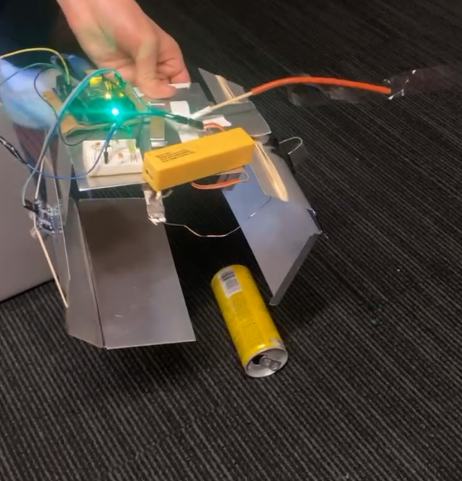
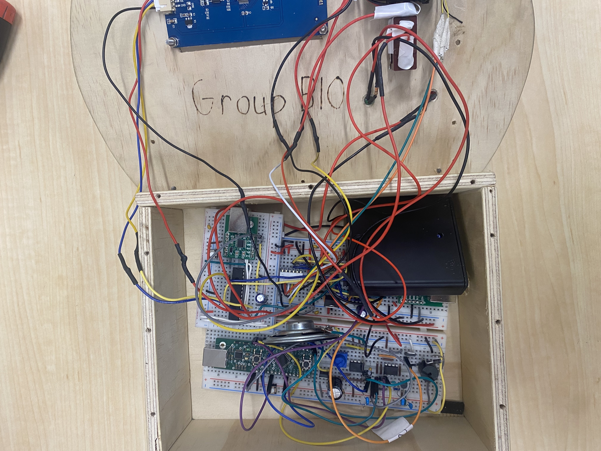
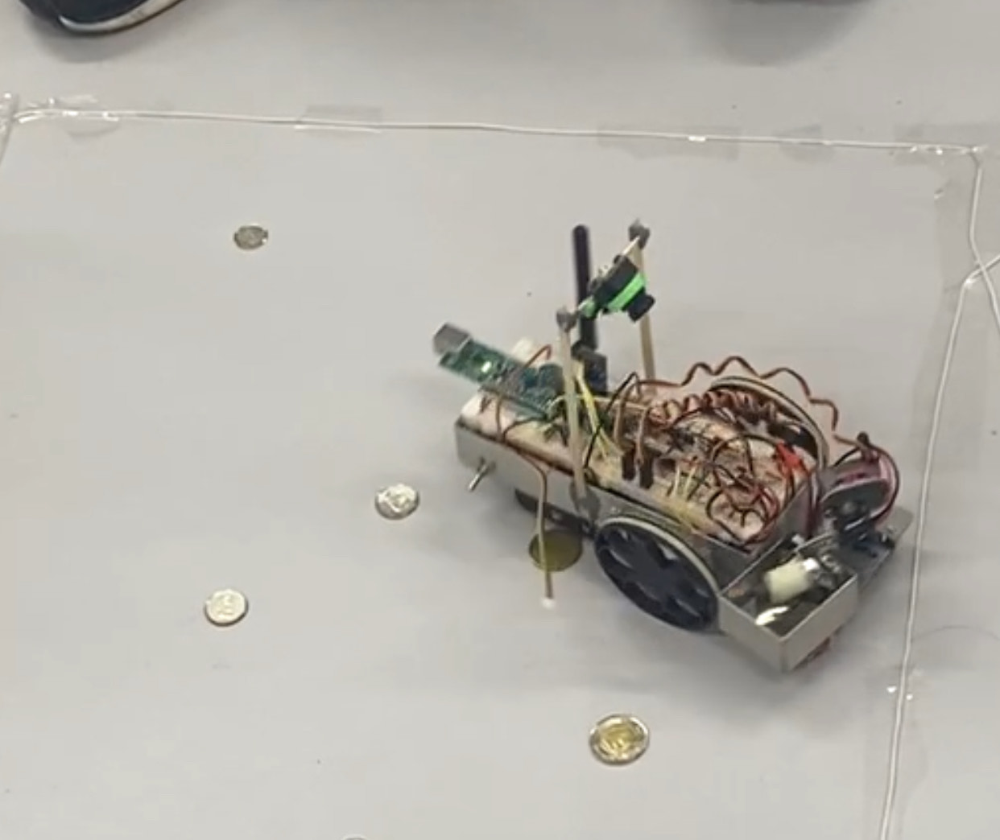

My Engineering Projects
PCB NFC Business Card — Personal Project


I designed a fully custom NFC-enabled business card to share my professional details with a tap. I developed the Altium component libraries, schematic, and PCB layout, and designed a planar inductive antenna tuned to the NFC carrier to ensure resonance and reliable coupling. I modeled antenna geometry and trace parameters, then optimized inductance and Q using spreadsheet-based calculations shown above. Next steps are fabrication and firmware for the NFC controller.
Back to topRISC Machine — Coursework


I implemented a simple RISC processor in Verilog with instruction decode, a finite-state control unit, an ALU, and read/write data memory. I wrote testbenches and validated functionality in ModelSim, then synthesized to a DE1-SoC FPGA for on-board demonstration. Responsibilities spanned RTL design, datapath/control partitioning, and bring-up using Quartus. The project strengthened my digital design fundamentals and verification workflow.
Back to topArcade Claw — Team Project
I developed Arduino firmware to read a distance sensor and actuate a servo when a calibrated threshold was reached, implementing debouncing and timing safeguards for repeatable picks. I also supported the electrical subsystem—power distribution, cable management, and fault isolation—to ensure reliable operation during demos. The experience cemented my interest in embedded systems and hands-on hardware collaboration.
Back to topReflow Solder Oven — Coursework


I co-developed a two‑MCU reflow oven controller. The first Nuvoton MCU handled UI and control sequencing; I wrote the assembly for the finite‑state machine driving LCD updates and inter‑MCU signaling. I implemented timer‑driven PWM for the heating element and audible indicators. The second MCU executed the thermal profile—preheat, soak, reflow, and cool‑down—based on thermocouple feedback. We streamed data over serial to a Python script for live plotting and verification. I also contributed to wiring, integration, and system validation.
Back to topCoin‑Picking Robot — Personal Project
 I built a small autonomous robot designed to detect and collect coins from the floor. I integrated sensor inputs for object detection and alignment, designed the motor control and power distribution, and wrote the embedded control logic to navigate, approach, and actuate a pickup mechanism. The project emphasized robust sensing under variable lighting, repeatable motion control, and mechanical‑electrical integration.
Back to topUpcoming Projects
Exciting new projects are on the way! Stay tuned for more updates...